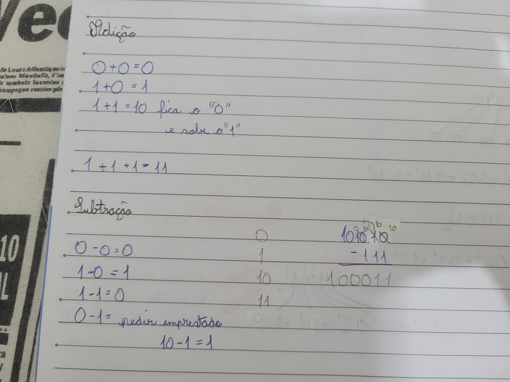
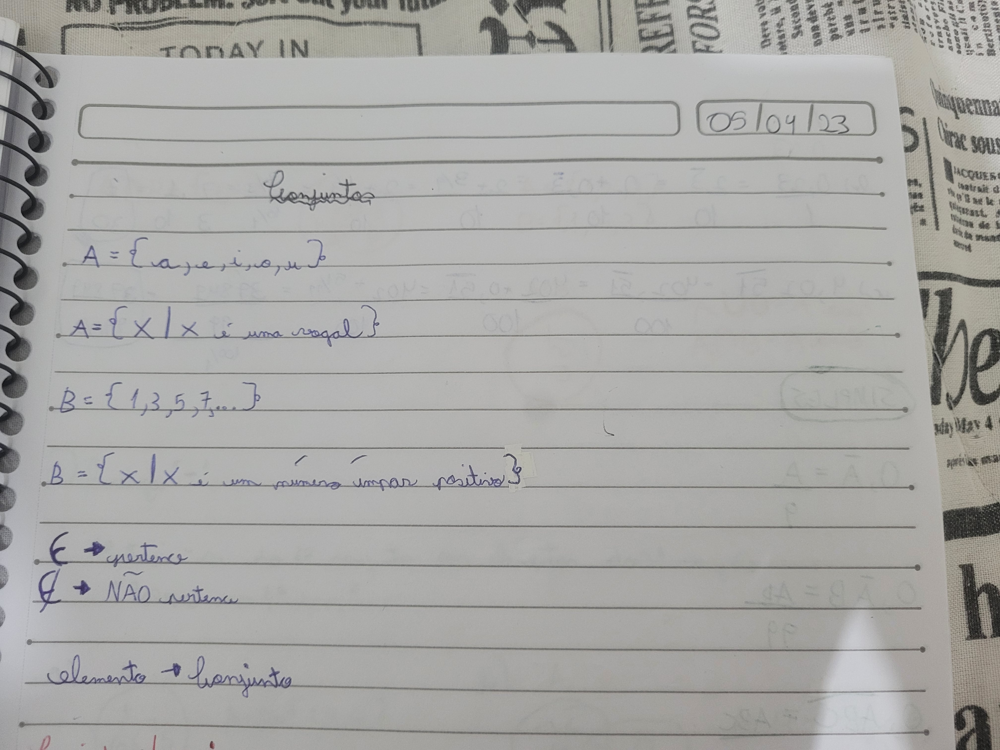
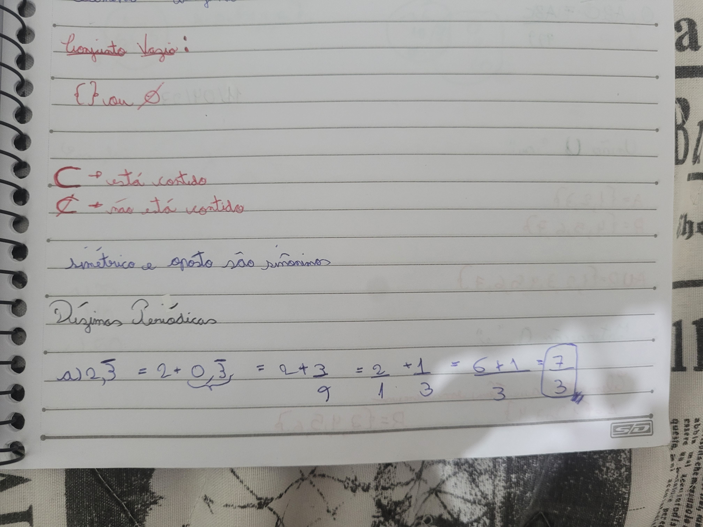
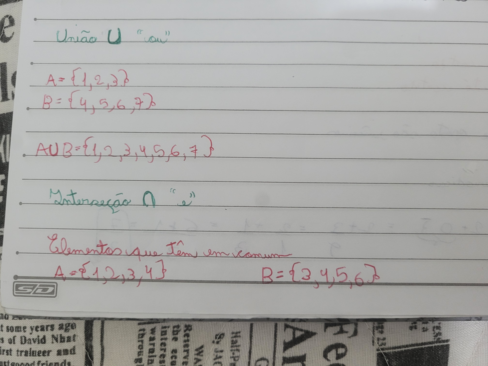
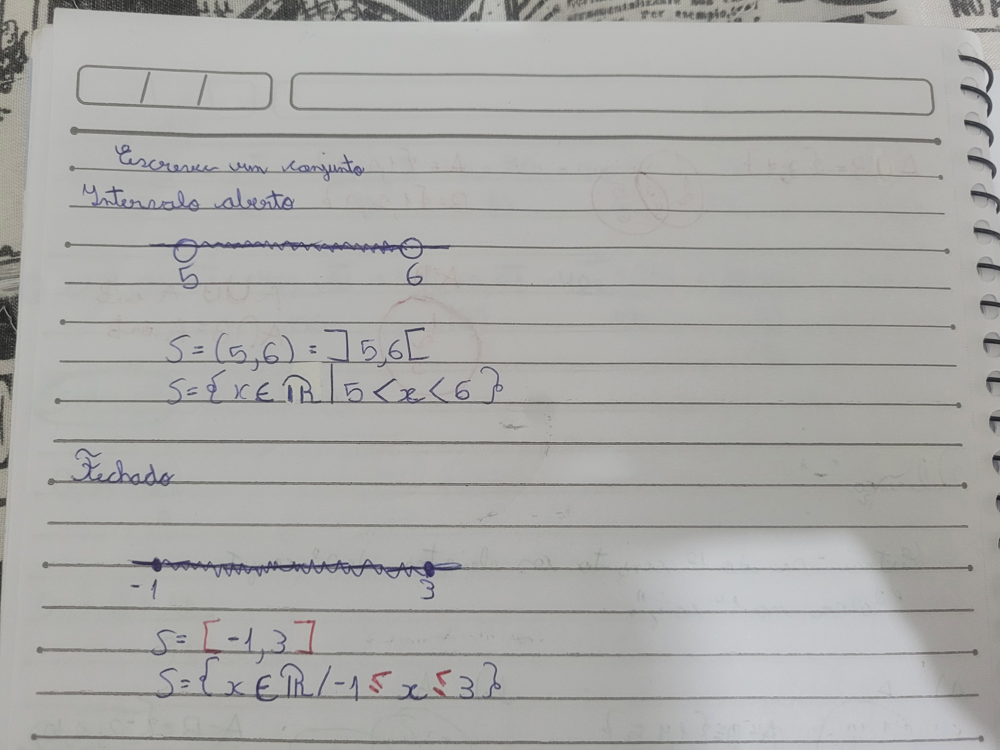
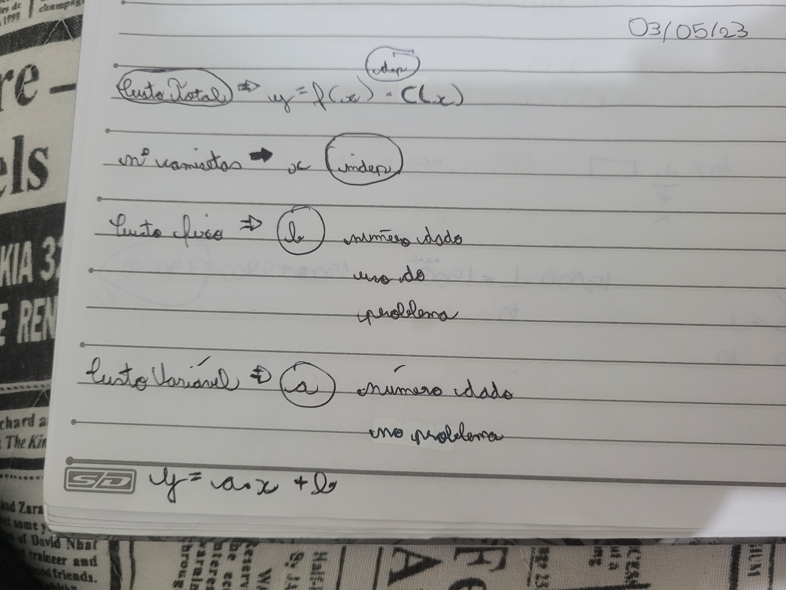

É um conjunto de símbolos usados para representar as quantidades numéricas. Um sistema que possui dez símbolos para representar todos os números é também chamado de Sistema de Base Dez.Um sistema que usa dois símbolos, é chamado de Base Dois ou Binário. Eu entendi bem esse conteúdo, como converter os sistemas também. Porém sobre as somas e subtrações dos números binários eu tive dificuldade, talvez por não decorar e não fazer todos os exercícios.
Um conjunto é quando os números possuem características em comum e por isso podem ser agrupados em conjuntos. Esse conteúdo eu entendi muito bem, sobre quem estão ou não contido, as dízimas periódicas, as interseções, união, diferenças e etc. Esse eu entendi muito bem, principalmente pela explicação em aula.
  Sobre os intervalos reais eu consegui entender quando está aberto ou fechado, porém tenho dificuldade de entender os símbolos, assim me confunde e eu me perco quando estou tentando definir. Já que existem diversos conjuntos como com números inteiros, números reais, números naturais, números racionais, números irracionais ou qualquer combinação desses tipos.
Relação entre duas grandezas/variáveis. É uma regra que relaciona cada elemento de um conjunto (representado pela variável x) a um único elemento de outro conjunto (representado pela variável y). Esse conteúdo foi o que eu menos entendi, acredito que seja por que eu não estou conseguindo me organizar para fazer os exercícios e estudar. 